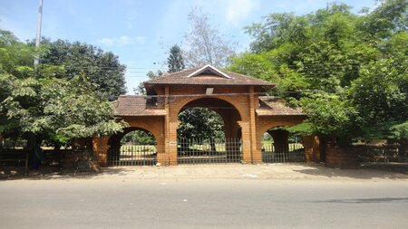
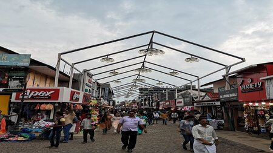

Kappad Beach
Kappad, or Kappakadavu locally, is a beach and village near Koyilandy, in the district Kozhikode.
Learn More

Mananchira Square
Mananchira is a man-made freshwater pond situated in the centre of the city of Kozhikode.
Learn More

SM Street
S.M. Street, abbreviation for Sweetmeat Street, also known as Mittai Theruvu, is a shopping street
Learn More